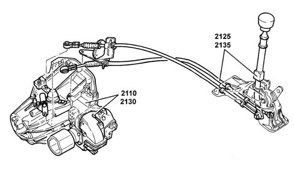

Introduction GEARBOX
- Path
- Descriptions > 21 GEARBOX > Introduction GEARBOX
- Kind
- system description
- Applies to
- engines: 2.0 TB, 2.4 20V, 2.4 JTD 10V; all production periods
- Interactive page
- https://sloeber94.github.io/elrnDB-lThss/en/#/226409
Applies to: all engines; all production periods

- Transverse 6 speed gearbox with two shafts supported by roller bearings and additional shaft for Reverse with synchromesh. The external controls has a twin cable.